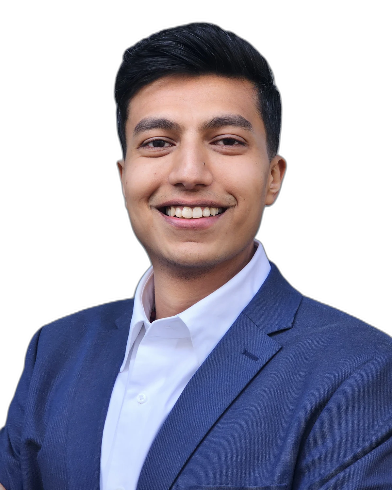
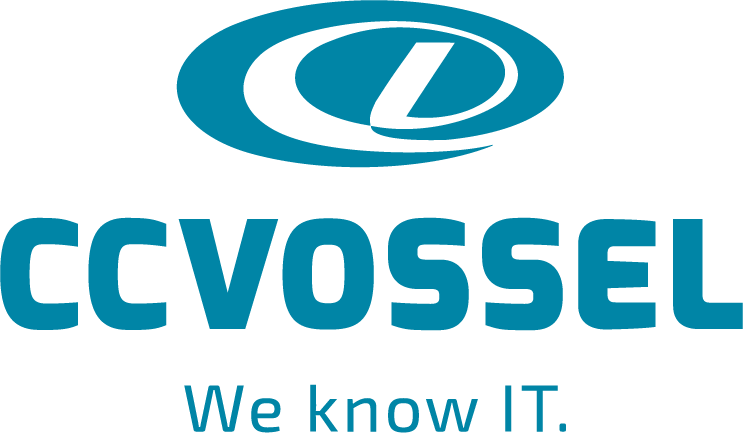

Antony Mervyn Shreyas · Berlin
Von Bangalore nach Berlin.
Ich habe bei Accenture in Indien angefangen, ein eigenes Unternehmen gegründet und es wieder geschlossen, um in Deutschland Management zu studieren. Heute arbeite ich jeden Tag mit KI. Mein Ziel: Unternehmen helfen, KI einzuführen, mit KI-Kompetenz für ihre Teams und einer Veränderung, die die Menschen mitnimmt.
BLRBER· 7.130 km
E-Mail schreiben
Bangalore · 2019 bis 2023
Die Brücke zwischen drei Teams.
Cloud Operations Associate bei Accenture, Oktober 2021 bis Januar 2023
Geboren in Bangalore. 2019 Bachelor of Engineering in Mechatronik, danach der Einstieg bei Accenture.
Ich war das Bindeglied zwischen den Fachteams unserer Kunden, ihren Technikteams und meinem eigenen Technikteam bei Accenture. Für mehr als zehn Kunden, darunter E.ON, GSK und Whirlpool, habe ich jeden Tag Störungen und Änderungen koordiniert und dafür gesorgt, dass alle Seiten wussten, was gerade passiert.
- 10+Kundenkonten, jeden Tag im Blick
- 3neue Analysten eingearbeitet und in Prozesse und ServiceNow geschult
- P1ein kritischer Ausfall bei Whirlpool: mit der Führungsebene im Call, bis zur Lösung
Dort habe ich gelernt: Technik läuft erst rund, wenn die Menschen dahinter miteinander reden.
Bangalore · Februar bis August 2023
Mein eigenes Unternehmen.
Gründer und Projektleiter, Interiors and Home Solutions
25Jahre war mein Vater da schon im Innenausbau.
Ich wollte meine eigene Firma. Also habe ich Accenture verlassen und Interiors and Home Solutions gegründet, für Innenausbau und Interior Design.
Meine Kunden hatten ein neu gebautes Haus, in dem nur die Wände standen. Ich habe alle Holzarbeiten geliefert, die ein Haus braucht, bevor man einziehen kann: die Küche mit ihren vielen Schränken, Einbauschränke in den Schlafzimmern, das TV-Möbel und alles Weitere aus Holz.
Alles lag bei mir: Material beschaffen, Handwerker und Arbeiter beauftragen, die Baustelle führen, bis zum letzten Schliff. Die ersten zwei Kunden habe ich selbst gewonnen und beide Häuser bis zur Abnahme fertiggestellt.
- 2Häuser, von den nackten Wänden bis zum Einzug
- 20.000 €Umsatz in sieben Monaten
- 20 %Gewinnmarge, ungefähr
- Material
- Handwerker
- Arbeiter
- Fertigstellung
August 2023
Ich habe die Firma geschlossen.
Beim Aufbau habe ich gemerkt: Die technische Seite kann ich. Aber um ein Unternehmen wirklich zu führen, fehlte mir das Management. Also bin ich dorthin gegangen, wo ich es lernen wollte. Mein Traum hieß Deutschland.
BLR → BER · September 2023
0km
Abflug in Bangalore.
Im Gepäck: Jahre bei Accenture, ein eigenes Unternehmen und eine klare Lücke.
Landung in Berlin. Neues Land, neue Sprache, ein Master in International Management.
Berlin · seit September 2023
Das Management, das mir gefehlt hat.
- Managing Transformation & ChangeWie Organisationen Veränderung planen und die Menschen dabei mitnehmen.
- Leadership & HR in Global OrganizationsFührung über Länder und Kulturen hinweg.
- EntrepreneurshipWas ich in meiner Firma erlebt hatte, jetzt mit Methode.
- Digital Project ManagementProjekte planen, steuern und sauber dokumentieren.
Meine Masterarbeit über emotionale und künstliche Intelligenz in interkulturellen Teams wurde 2026 als Fachartikel veröffentlicht. Artikel lesen
Berlin · ab 2024
Arbeiten in Deutschland.
-
Okt 2024 bis Jan 2025
CCVOSSEL GmbH, Berlin

Mein erster Job in Deutschland, in einem deutschen Team. IT-Betrieb für 26 Anwendungen nach den Sicherheitsstandards von BMW: Komponenten bestellen, Zertifikate ausstellen, Wissensartikel pflegen.
-
März bis Aug 2025
Accenture GmbH, Berlin

Zurück bei Accenture, diesmal als Management Consulting Associate in einem laufenden SAP-Programm.
Analysen und Präsentationen für Termine mit dem Senior Management, Jira-Dashboards für die Programmleitung und automatisierte Feedback- und Reporting-Abläufe für ein Team von sieben Personen.
Berlin · heute
Heute arbeite ich jeden Tag mit KI. Und ich sehe, was sie mit Teams macht.
Wenn KI in ein Team kommt, ist die Technik selten das Problem. Es gibt Unsicherheit und oft echte Angst. Die menschliche Seite der Einführung entscheidet, ob es funktioniert.
Genau da will ich ansetzen: Teams begleiten, damit sie KI ohne Angst einsetzen und produktiver arbeiten. Mit dem Blick eines Technikers und der Erfahrung eines Gründers.
Wobei ich Ihr Unternehmen unterstützen kann.
-
KI-Kompetenz im Team aufbauen
Ich zeige Ihren Mitarbeitenden, wie sie KI-Werkzeuge wie Claude sicher und sinnvoll im Arbeitsalltag nutzen, an ihren eigenen Aufgaben statt an Beispielen aus dem Lehrbuch.
ErfahrungIch arbeite jeden Tag mit KI und habe bei Accenture neue Analysten eingearbeitet und geschult.
-
Die Einführung als Veränderung begleiten
Ich nehme Unsicherheit und Angst ernst, bevor daraus Widerstand wird: klar erklären, was sich ändert, Fragen Raum geben, die Menschen mitnehmen.
ErfahrungMaster mit Managing Transformation & Change, Masterarbeit und Fachartikel über psychologische Sicherheit und KI-Werkzeuge in Teams.
-
Abläufe mit KI vereinfachen
Ich finde wiederkehrende Aufgaben, die Ihrem Team Zeit kosten, und baue einfache Lösungen dafür. So wird KI im Alltag spürbar produktiver.
ErfahrungBei Accenture Berlin habe ich Feedback- und Reporting-Abläufe für ein Team von sieben Personen automatisiert. Den KI-Coach unten habe ich selbst gebaut.
Übrigens: Seit Februar 2025 verlangt der EU AI Act von Unternehmen, die KI einsetzen, dass ihre Mitarbeitenden über ausreichende KI-Kompetenz verfügen (Artikel 4).
Was ich selbst baue
Clueless Consultant Coach: ein KI-Coach, an dem junge Beraterinnen und Berater Kundenfälle üben. Er widerspricht zuerst und lobt danach.
Coach öffnenDie App braucht beim ersten Öffnen einen Moment zum Aufwachen.
© 2026 Antony Shreyas · Berlin